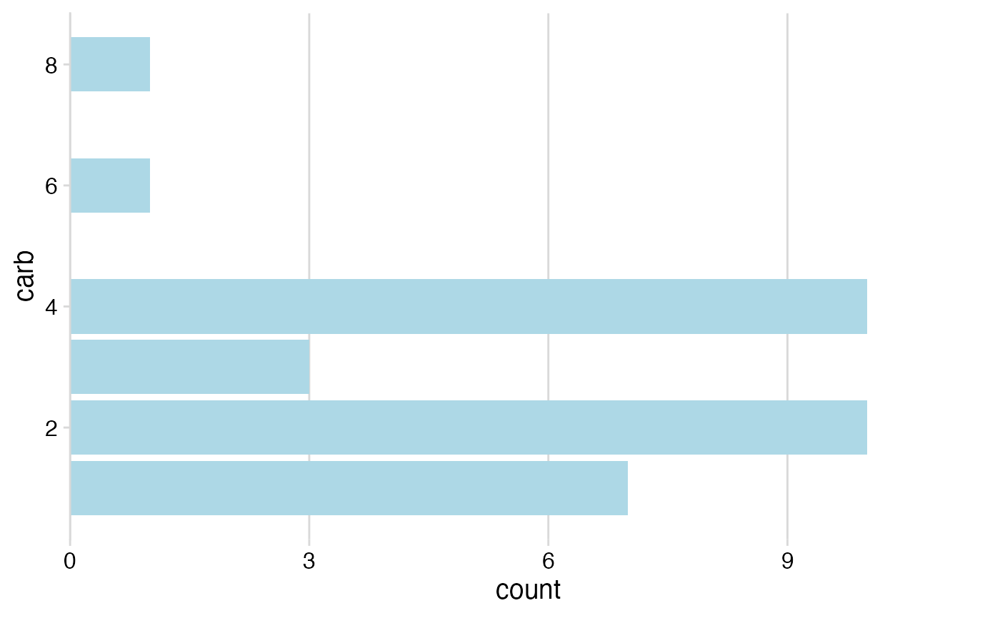

Minimalistic themes with grids
theme_minimal_grid.RdThree minimalistic themes that provide either a full grid,
a horizontal grid, or a vertical grid. Similar to theme_minimal(), but with some
stylistic differences. Most importantly, these themes do not draw minor grid lines.
Also, font sizes are coordinated with theme_half_open() and with the defaults
in the save_plot() function.
theme_minimal_grid(font_size = 14, font_family = "", line_size = 0.5, rel_small = 12/14, rel_tiny = 11/14, rel_large = 16/14, color = "grey85", colour) theme_minimal_vgrid(font_size = 14, font_family = "", line_size = 0.5, rel_small = 12/14, rel_tiny = 11/14, rel_large = 16/14, color = "grey85", colour) theme_minimal_hgrid(font_size = 14, font_family = "", line_size = 0.5, rel_small = 12/14, rel_tiny = 11/14, rel_large = 16/14, color = "grey85", colour)
Arguments
| font_size | Overall font size. |
|---|---|
| font_family | Font family for plot title, axis titles and labels, legend texts, etc. |
| line_size | Line size for grid lines. |
| rel_small | Relative size of small text (e.g., axis tick labels) |
| rel_tiny | Relative size of tiny text (e.g., caption) |
| rel_large | Relative size of large text (e.g., title) |
| color, colour | Color of grid lines. |
Details
theme_minimal_grid() provides a minimal grid theme. theme_minimal_hgrid() strips down
this theme even further and draws only horizontal lines, and theme_minimal_vgrid()
does the same for vertical lines.
Examples
library(ggplot2) # theme_minimal_grid() ggplot(iris, aes(x = Sepal.Length, y = Sepal.Width, color = Species)) + geom_point() + theme_minimal_grid()# theme_minimal_hgrid() ggplot(mtcars, aes(x = carb)) + geom_bar(fill = "lightblue") + scale_y_continuous(limits = c(0, 11.5), expand = c(0, 0)) + theme_minimal_hgrid()# theme_minimal_vgrid() ggplot(mtcars, aes(x = carb)) + geom_bar(fill = "lightblue") + scale_y_continuous(limits = c(0, 11.5), expand = c(0, 0)) + coord_flip() + theme_minimal_vgrid()